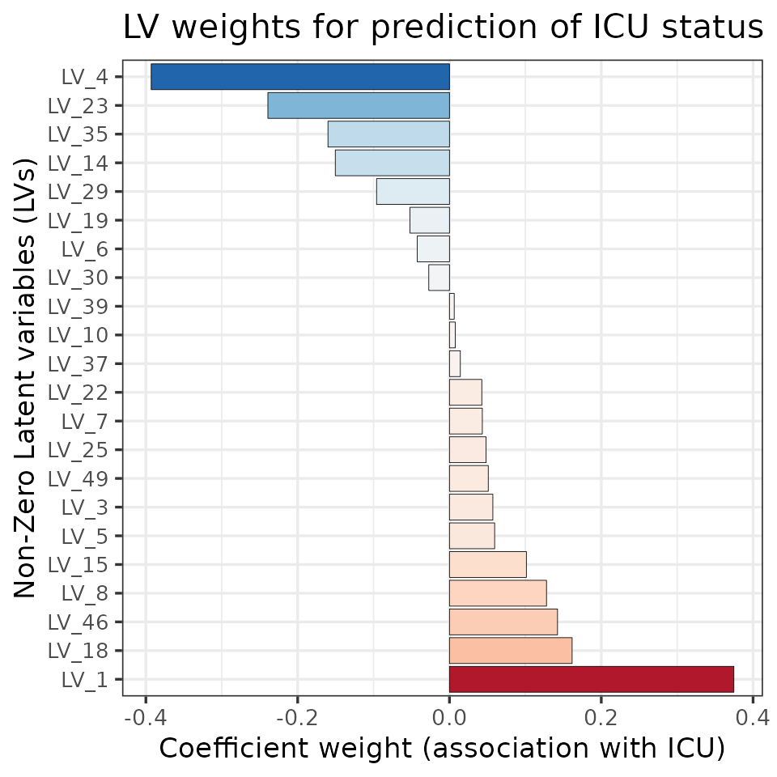
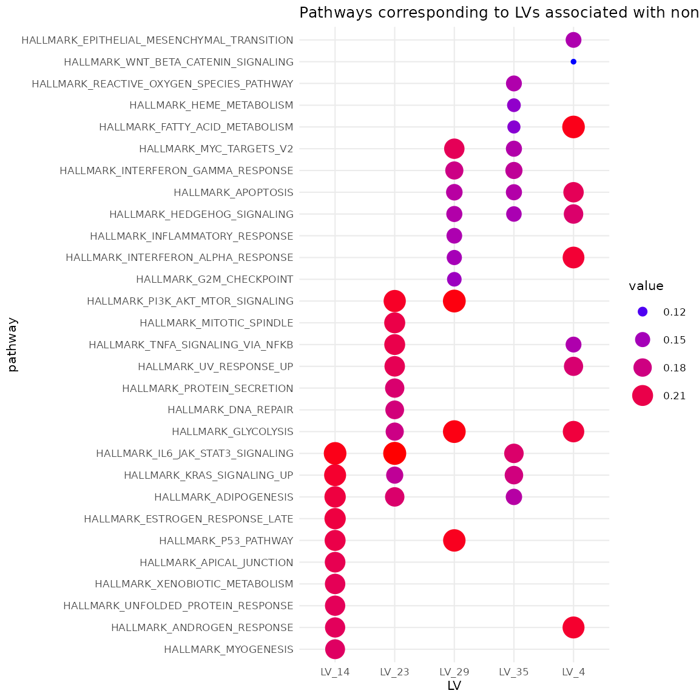

Quick start
Steps to embed Omics data into a latent space representation are
shown below. autoplieR takes in data frames containing gene expression
data and corresponding pathways data called xtrain and
pwy, respectively. For ease of analysis, be sure that row
names are appropriately labeled. lv should have a factored
column with the chosen latent variables.
mod <- autoPLIER(n_components = 100)
mod <- autoPLIER.fit(mod, x_train = xtrain, pathways = pwy, verbose = 0)
trans <- autoPLIER.transform(mod, x_predict = xtrain, pathways = pwy)
# Get pathways most associated with the LVs
top_pwys <- autoPLIER.get_top_pathways(mod, LVs = lv, n_pathways = 5)
# Get LVs most associated with a chosen pathway
top_LVs_pwys <- autoPLIER.get_top_pathway_LVs(mod, pathway = 2, n_LVs = 5L) # pathway arg goes by row name
# from pathways dataset
top_LVs_pwys <- autoPLIER.get_top_pathway_LVs(mod, pathway = "BIOCARTA_LYM_PATHWAY", n_LVs = 5L) # if row name is named by pathwayInstallation
AutoplieR can be installed from github.
library(remotes)
install_github("Bishop-Laboratory/autoplieR")Method
Sed lacinia neque a nisl interdum dictum. Morbi accumsan posuere mauris. Vivamus vulputate justo sed tincidunt cursus.
Example: A COVID-19 case study
To determine what factors are highly associated with whether or not COVID-19 patients are admitted to the ICU, we will perform an analysis using autoplieR commands.
The resulting transformed data can then be used to train a logistic model for prediction and visualization.
Datasets
Pathways data are obtained from the msigdbr package for
only demonstration. Therefore, misgdbr may not be necessary
for your analysis.
Metadata can also be loaded for easier interpretation of your results, but is not needed.
# Load pathways data
pathways <- msigdbr(category = "H") %>%
select(gs_name, gene_symbol) %>%
mutate(value=1) %>%
distinct() %>%
pivot_wider(
id_cols = gs_name, names_from = gene_symbol,
values_from = value, values_fill = 0
) %>%
column_to_rownames("gs_name")
# Get TPM data
metadata <- read_csv(
system.file("extdata", "GSE157103_icu_metadata.csv.xz", package = "autoplieR"),
show_col_types = FALSE
) %>% rename(sampleID=1)
tpm <- read_csv(
system.file("extdata", "GSE157103_icu_tpm.csv.xz", package = "autoplieR"),
show_col_types = FALSE
) %>% rename(sampleID=1)Training autoplieR
Once training and pathways files are loaded, we can initiate a model
with the autoPLIER() function. Note that the number of
components (n_components) and learning rate
(learning_rate) chosen here were for quicker illustration
purposes.
# Create a model
ap <- autoPLIER(n_components = 50, learning_rate = 0.000001)Next, fit and transform the model. It is imperative to assign the fit step to the same object assigned in the previous build model step.
# Fit model
ap <- autoPLIER.fit(ap, x_train = column_to_rownames(tpm, var = "sampleID"), pathways = pathways, verbose = 0)
# Transform the new data
df_ap <- autoPLIER.transform(ap, x_predict = column_to_rownames(tpm, var = "sampleID"), pathways = pathways)
colnames(df_ap) <- paste0("LV_", gsub(colnames(df_ap), pattern = " ", replacement = ""))The df_ap object can now be used to plot and train a
logistic model.
Plotting autoplieR-transformed data using PCA
# Compute TSNE
pca_res <- prcomp(df_ap, scale. = TRUE)
# Index and bind metadata for 'COVID' and 'ICU_1'
df_pca <- as.data.frame(pca_res$x[,1:2])
rownames(df_pca) <- rownames(df_ap)
df_plot <- df_pca %>%
rownames_to_column(var="sampleID") %>%
as_tibble() %>%
inner_join(metadata) %>%
mutate(
COVID=as.factor(COVID),
ICU=as.factor(ICU_1)
)
# Plot for ICU and non-ICU
ggplot(df_plot, aes(x = PC1, y = PC2, color = ICU)) +
geom_point() +
theme_bw() +
ggtitle("Biplot of ICU vs non-ICU")We see there is separation between ICU and non-ICU COVID patients.
Training a logistic regression model to predict ICU vs. non-ICU within the COVID-19 cohort
The glmnet package is used to to train a lasso model
with a grid of logarithmic values. Refer to the glmnet
vignette for more details.
# Fit model
log_lambda_grid <- seq(0, -20, length=200)
lambda_grid <- 10^log_lambda_grid
icu <- metadata %>%
filter(COVID == 1) %>%
pull(ICU_1)
lr_model <- cv.glmnet(
as.matrix(df_ap), icu, alpha = 1,
family = "binomial", type.measure='class', lambda = lambda_grid
)
plot(lr_model, main = "")
title(main = "Lasso lamda using 10-fold cross validation", line = 3)From the plot, we see the misclassification error is the smaller as the penalty parameter approaches 0. The optimal or minimal lambda is seen at the left dotted line at approximately -7. The selected lambda below corresponds with this.
# Select the best lambda
lambda <- lr_model$lambda[which.min(lr_model$cvm)]We can now fit the model with the optimal lambda to predict ICU and non-ICU outcomes in COVID-19 patients.
# Build the logistic model
lr_final <- glmnet(
df_ap, icu, alpha = 1,
family = "binomial", type.measure='class', lambda = lambda
)Once predictions are generated from our trained lasso model, construct a confusion matrix to examine the distribution of predictions and actual values.
pred <- predict(lr_final, as.matrix(df_ap), type="class")
# Show the confusion matrix
pred %>%
as.data.frame() %>%
rownames_to_column("sampleID") %>%
as_tibble() %>%
rename(pred_icu=s0) %>%
mutate(icu=icu, pred_icu=as.numeric(pred_icu)) %>%
group_by(pred_icu, icu) %>%
tally() %>%
pivot_wider(
id_cols = pred_icu, names_from = icu,
values_from = n, names_prefix = "Real: "
) %>%
mutate(pred_icu = paste0("Predicted: ", pred_icu)) %>%
column_to_rownames("pred_icu")## Real: 0 Real: 1
## Predicted: 0 46 6
## Predicted: 1 4 44Lastly, retrieve all non-zero coefficients from the model as shown below.
# Get the coefficients
coeffs <- coef(lr_final)
# Analyze the LVs in the coefs
coefs_tidy <- coeffs %>%
as.matrix() %>%
as.data.frame() %>%
rownames_to_column("LV") %>%
as_tibble() %>%
arrange(desc(s0)) %>%
filter(abs(s0) != 0, LV != "(Intercept)") %>%
rename(Weight=s0) %>%
mutate(LV = factor(LV, levels = unique(.$LV)))
# Plot the LVs and their coefs
ggplot(coefs_tidy, aes(x = LV, y = Weight, fill=Weight)) +
geom_col(color="black", size = .15) +
coord_flip() +
xlab(NULL) +
theme_bw(base_size = 13) +
theme(axis.text.y = element_text(size = 10), legend.position = "none") +
ylab("Coefficient weight (association with ICU)") +
xlab("Non-Zero Latent variables (LVs)") +
ggtitle("LV weights for prediction of ICU status") +
scale_fill_distiller(type="div", palette="RdBu") 
Extracting LVs and top pathways
Use the obtained coefficients from the previous section above to select significant LVs. In this example, positive coefficients corresponded to ICU admission while negative coefficients corresponded to non-ICU.
# Retrieve LVs associated with being in the ICU
top_pos_LVs <- coefs_tidy %>% slice_max(order_by = Weight, n = 5)
top_pos_LVs_pwys <- autoPLIER.get_top_pathways(ap, LVs = top_pos_LVs$LV, n_pathways = 10)
top_pos_LVs_pwys %>%
bind_rows() %>%
arrange(LV, value) %>%
mutate(pathway = factor(pathway, levels = unique(.$pathway)), LV = as.factor(LV)) %>%
ggplot(., aes(LV, pathway, size = value, color = value)) +
geom_point() +
guides(color=guide_legend(), size = guide_legend()) +
scale_color_gradient(low = "blue", high = "red") +
theme_minimal(base_size = 8) +
ggtitle("Pathways corresponding to LVs associated with ICU")
# Retrieve LVs associated with not being in the ICU
top_neg_LVs <- coefs_tidy %>% slice_min(order_by = Weight, n = 5)
top_neg_LVs_pwys <- autoPLIER.get_top_pathways(ap, LVs = top_neg_LVs$LV, n_pathways = 10)
top_neg_LVs_pwys %>%
bind_rows() %>%
arrange(LV, value) %>%
mutate(pathway = factor(pathway, levels = unique(.$pathway)), LV = as.factor(LV)) %>%
ggplot(., aes(LV, pathway, size = value, color = value)) +
geom_point() +
guides(color=guide_legend(), size = guide_legend()) +
scale_color_gradient(low = "blue", high = "red") +
theme_minimal(base_size = 8) +
ggtitle("Pathways corresponding to LVs associated with non-ICU") 
Session info
## R version 4.2.0 (2022-04-22)
## Platform: x86_64-pc-linux-gnu (64-bit)
## Running under: Ubuntu 20.04.4 LTS
##
## Matrix products: default
## BLAS: /usr/lib/x86_64-linux-gnu/blas/libblas.so.3.9.0
## LAPACK: /usr/lib/x86_64-linux-gnu/lapack/liblapack.so.3.9.0
##
## locale:
## [1] LC_CTYPE=en_US.UTF-8 LC_NUMERIC=C
## [3] LC_TIME=en_US.UTF-8 LC_COLLATE=en_US.UTF-8
## [5] LC_MONETARY=en_US.UTF-8 LC_MESSAGES=en_US.UTF-8
## [7] LC_PAPER=en_US.UTF-8 LC_NAME=C
## [9] LC_ADDRESS=C LC_TELEPHONE=C
## [11] LC_MEASUREMENT=en_US.UTF-8 LC_IDENTIFICATION=C
##
## attached base packages:
## [1] stats graphics grDevices utils datasets methods base
##
## other attached packages:
## [1] msigdbr_7.5.1 forcats_0.5.1 stringr_1.4.0
## [4] dplyr_1.0.9 purrr_0.3.4 readr_2.1.2
## [7] tidyr_1.2.0 tibble_3.1.7 tidyverse_1.3.1
## [10] caret_6.0-92 lattice_0.20-45 ggplot2_3.3.6
## [13] glmnet_4.1-4 Matrix_1.4-1 autoplieR_0.0.0.9000
##
## loaded via a namespace (and not attached):
## [1] colorspace_2.0-3 ellipsis_0.3.2 class_7.3-20
## [4] rprojroot_2.0.3 fs_1.5.2 rstudioapi_0.13
## [7] farver_2.1.0 listenv_0.8.0 bit64_4.0.5
## [10] prodlim_2019.11.13 fansi_1.0.3 lubridate_1.8.0
## [13] xml2_1.3.3 codetools_0.2-18 splines_4.2.0
## [16] cachem_1.0.6 knitr_1.39 jsonlite_1.8.0
## [19] pROC_1.18.0 broom_0.8.0 dbplyr_2.1.1
## [22] png_0.1-7 compiler_4.2.0 httr_1.4.3
## [25] backports_1.4.1 assertthat_0.2.1 fastmap_1.1.0
## [28] cli_3.3.0 htmltools_0.5.2 tools_4.2.0
## [31] gtable_0.3.0 glue_1.6.2 reshape2_1.4.4
## [34] rappdirs_0.3.3 Rcpp_1.0.8.3 cellranger_1.1.0
## [37] jquerylib_0.1.4 pkgdown_2.0.5 vctrs_0.4.1
## [40] babelgene_22.3 nlme_3.1-157 iterators_1.0.14
## [43] timeDate_3043.102 gower_1.0.0 xfun_0.31
## [46] globals_0.15.0 rvest_1.0.2 lifecycle_1.0.1
## [49] future_1.25.0 MASS_7.3-57 scales_1.2.0
## [52] ipred_0.9-12 vroom_1.5.7 ragg_1.2.2
## [55] hms_1.1.1 parallel_4.2.0 RColorBrewer_1.1-3
## [58] yaml_2.3.5 memoise_2.0.1 reticulate_1.25
## [61] sass_0.4.1 rpart_4.1.16 stringi_1.7.6
## [64] highr_0.9 desc_1.4.1 foreach_1.5.2
## [67] hardhat_0.2.0 lava_1.6.10 shape_1.4.6
## [70] rlang_1.0.2 pkgconfig_2.0.3 systemfonts_1.0.4
## [73] evaluate_0.15 labeling_0.4.2 recipes_0.2.0
## [76] bit_4.0.4 tidyselect_1.1.2 here_1.0.1
## [79] parallelly_1.31.1 plyr_1.8.7 magrittr_2.0.3
## [82] R6_2.5.1 generics_0.1.2 DBI_1.1.2
## [85] pillar_1.7.0 haven_2.5.0 withr_2.5.0
## [88] survival_3.2-13 nnet_7.3-17 future.apply_1.9.0
## [91] modelr_0.1.8 crayon_1.5.1 utf8_1.2.2
## [94] tzdb_0.3.0 rmarkdown_2.14 grid_4.2.0
## [97] readxl_1.4.0 data.table_1.14.2 ModelMetrics_1.2.2.2
## [100] reprex_2.0.1 digest_0.6.29 textshaping_0.3.6
## [103] stats4_4.2.0 munsell_0.5.0 bslib_0.3.1